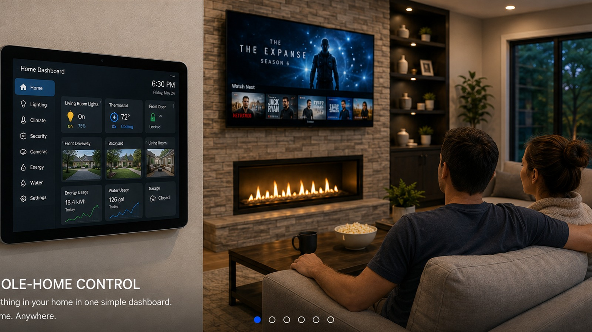
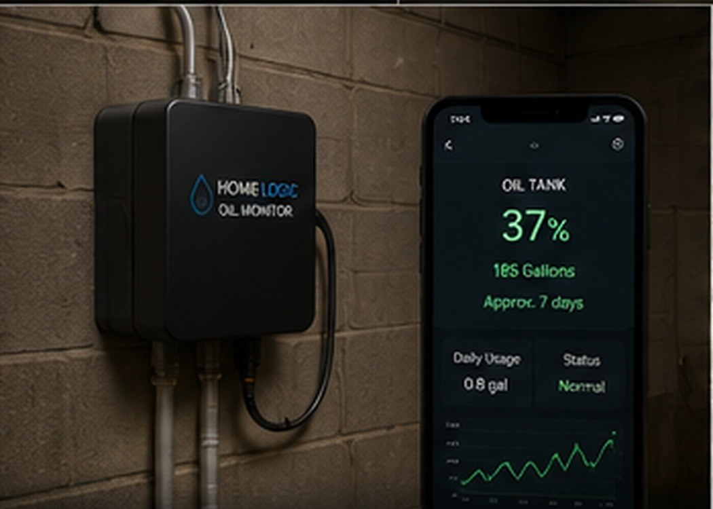
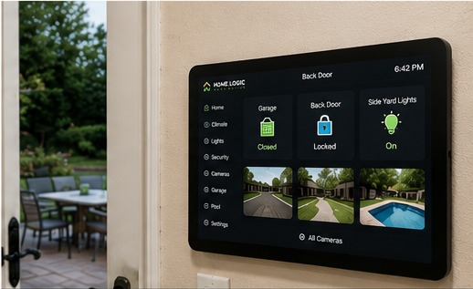
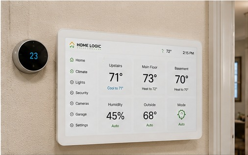
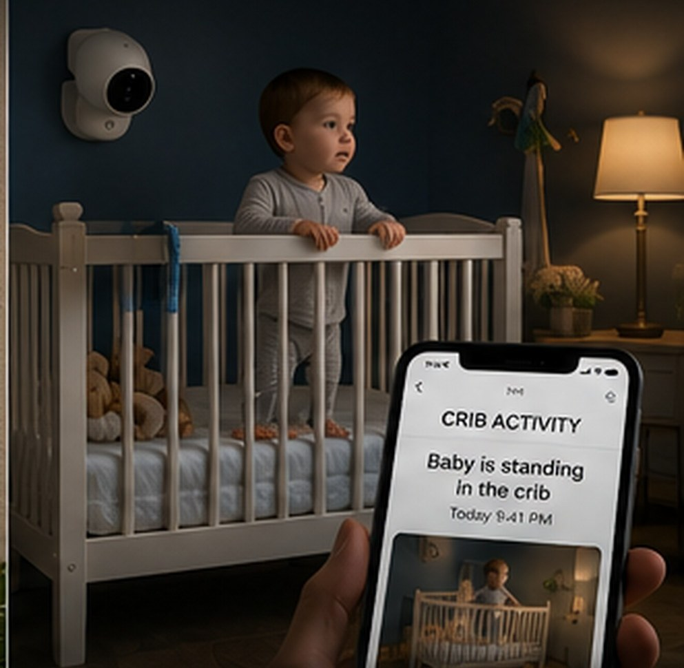
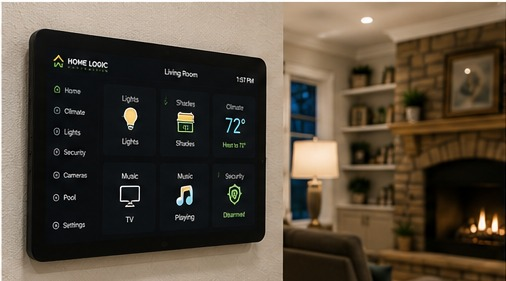
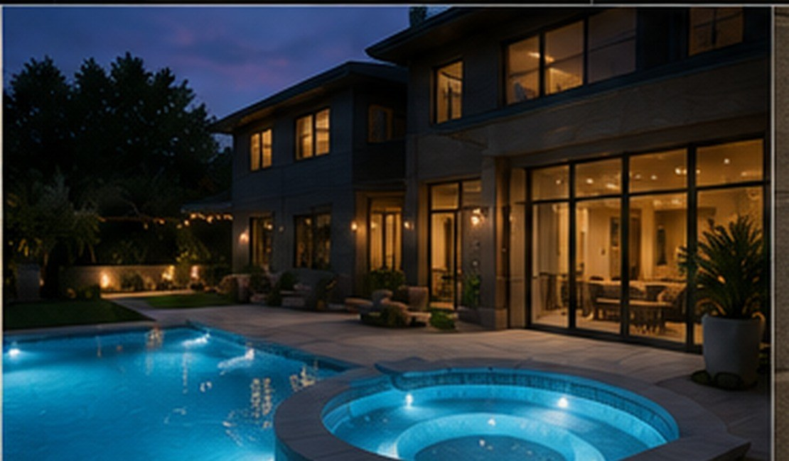
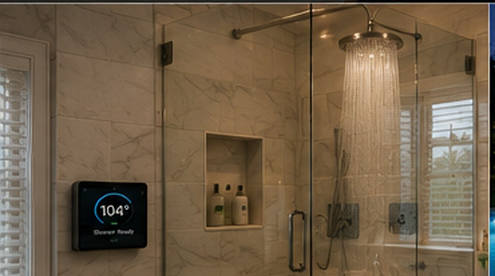
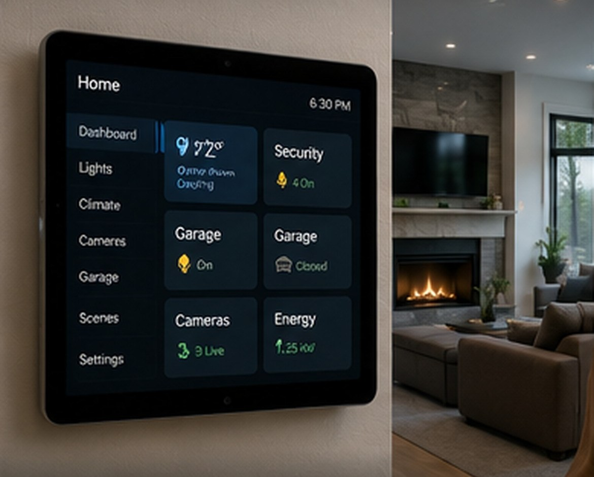
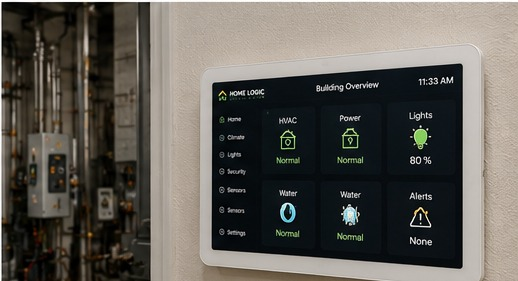

Whole-Home ControlEverything together. One simple view.
Lighting, climate, cameras, garage and entertainment in one system.
SMART HOME & BUILDING AUTOMATION • NEW YORK & NEW JERSEY
Home Logic Automation designs and installs custom smart home, monitoring, and safety systems for homes and businesses in the Hudson Valley and northern New Jersey— using what you already own when it makes sense and adding only what the job actually needs.
No gadget pile. No one-size-fits-all package. Just a smarter way to make your space work.
WHO WE HELP
Bring heating, garage, lighting, pool equipment, cameras, entertainment, alerts and more into one practical system.
Explore home solutions →Simplify daily routines, reduce unnecessary controls, improve visibility, and create helpful alerts for family or caregivers.
Explore supportive solutions →Automate repetitive building tasks, monitor equipment, reduce after-hours waste, and bring scattered controls into one view.
Explore business solutions →REAL-WORLD IDEAS

See tank level remotely, estimate remaining time, and get useful low-level alerts without walking outside to check.

See door status from one dashboard and build alerts or automations around the equipment you already have.

Bring multiple thermostats and heating zones into a single interface without running room to room.

Use a compatible camera or local vision sensor to detect when a baby stands up in the crib and send a prompt alert to a parent or caregiver.
Supplemental awareness only — not a fall-prevention device and not a replacement for supervision.
Reduce distractions across the house, adjust lighting, and coordinate compatible devices with one command.

Coordinate pumps, heaters, lighting, schedules, and status so the backyard does less waiting and more working.

Start the shower at your preferred temperature before you step in—built around proper thermostatic anti-scald protection.

Lighting, climate, cameras, garage and entertainment brought together, so you stop hunting through separate apps.

We look at the situation first, then design the simplest practical solution instead of forcing you into a product catalog.
Don’t see your situation here? That’s usually the interesting one. Call (845) 551-6078 and we’ll tell you straight whether it’s worth doing.
HOW IT WORKS
The goal isn’t to sell you more gadgets. It’s to understand what would make the space easier, safer, or simpler to live with.
WHAT CUSTOMERS SAY
“Now everything we actually use is right there.”
“Home Logic Automation set up a wall-mounted dashboard in our house and tied our thermostat, garage door, cameras, and a few other things into one screen. Before this we were constantly jumping between different apps. Now everything we actually use is right there.
They also set up the garage so I can see whether it’s open or closed and get notified if I leave it open. The whole setup was customized around how we use the house instead of just installing a bunch of smart devices.
It’s only been installed a short time and we’re already talking about adding a few more things. Definitely recommend them if you want home automation that’s actually useful.”
John — Franklin Lakes, NJ · Dashboard with thermostat, garage & camera integration
“The whole setup feels like it was actually designed for our home.”
“Home Logic Automation set up our thermostat, garage door, cameras, and lighting so we can control everything from one dashboard. The best part is they didn’t try to replace everything we already owned—they figured out how to make it all work together.
They also added a few automations we didn’t even think about, like getting an alert if the garage is left open and being able to check the house when we’re away. Everything is simple enough that everyone in the house can use it.
The system has been reliable and the whole setup feels like it was actually designed for our home instead of being a generic smart-home package.”
Sam — Short Hills, NJ · Thermostat, garage, cameras & lighting on one dashboard
“The biggest thing for us is peace of mind.”
“Home Logic Automation helped us set up my mother’s house so we can keep an eye on a few important things without making her feel like she’s being monitored all the time. We can check that the house temperature is okay, see if a door or garage was left open, and get alerts when something isn’t normal.
The biggest thing for us is peace of mind. My mom doesn’t have to learn a bunch of new technology, and we don’t have to call her constantly just to make sure everything is okay.
They listened to what we were actually worried about and built the system around that. It’s been a huge help for our family.”
Tom — Franklin Lakes, NJ · Remote awareness for his mother’s home
“He doesn’t have to do anything different.”
“Home Logic Automation helped us make my dad’s house safer without changing the way he lives. We had a few concerns about him forgetting things around the house, so they set up simple alerts for things like doors being left open, unusual activity, and the temperature getting too high or low.
What I really like is that he doesn’t have to do anything different. The system works in the background, and my sister and I can check on the important stuff from our phones.
It gives us some peace of mind while still letting my dad stay independent in his own home.”
Matt — Warwick, NY · Safety alerts for his dad’s home
“Now we use it every day.”
“Home Logic Automation helped us set up a few things around the house that have made life with a baby a lot easier. We can check the nursery temperature, see the camera, control the lights, and get alerts if something needs our attention without having to keep checking different apps.
One of my favorite parts is the nighttime setup. We can dim the lights and adjust the temperature right from our phones without going into the nursery and risking waking the baby up.
It’s not something I thought we needed until we had it. Now we use it every day.”
Mike — Vernon, NJ · Nursery monitoring, lighting & climate
“I really wish we had it before we ran out.”
“We actually ran out of heating oil last winter, which is what made us interested in the oil monitoring system from Home Logic Automation. They explained that the monitor is something they designed and created themselves to track how much the burner is running and estimate how much oil we have left.
Now we can check our estimated oil level and usage right from the dashboard instead of trying to remember to check the gauge in the basement. We can also see when we’re starting to get low so we have time to schedule a delivery.
After dealing with a no-heat situation once, this gives us a lot more peace of mind. I really wish we had it before we ran out.”
Kate — Wantage, NJ · Custom-built heating oil monitoring
ABOUT HOME LOGIC
Home Logic Automation is built around custom integration. Sometimes the best answer is a product already on the market. Sometimes it’s connecting equipment you already own. Sometimes it’s building a small custom controller that solves a very specific problem. The point is the result—not the gadget.
COMMON QUESTIONS
Usually not. We start with what you own—thermostats, cameras, garage openers, pool equipment—and integrate it when it makes sense. We only recommend new hardware when the job actually needs it.
Nothing. The walkthrough is free with no obligation. We look at the space, tell you what's possible, and you decide whether it's worth doing. Often a texted photo is enough to get the conversation started.
No. Plenty of projects solve one specific problem—a heating oil monitor, nighttime lighting, a single alert. If a small fix is the right answer, that's what we'll recommend.
Orange & Rockland County in New York, and Sussex, Passaic & Bergen County in New Jersey. Not sure if you're in range? Call (845) 551-6078 and ask.
START A CONVERSATION
Tell us a little about your home, your business, or the situation you’re trying to improve.
Calls and texts answered 7 days a week. Free walkthrough, no obligation — tell us what room, what equipment, or what problem. A photo is often enough to get started.
Serving Orange & Rockland County NY and Sussex, Passaic & Bergen County NJ.